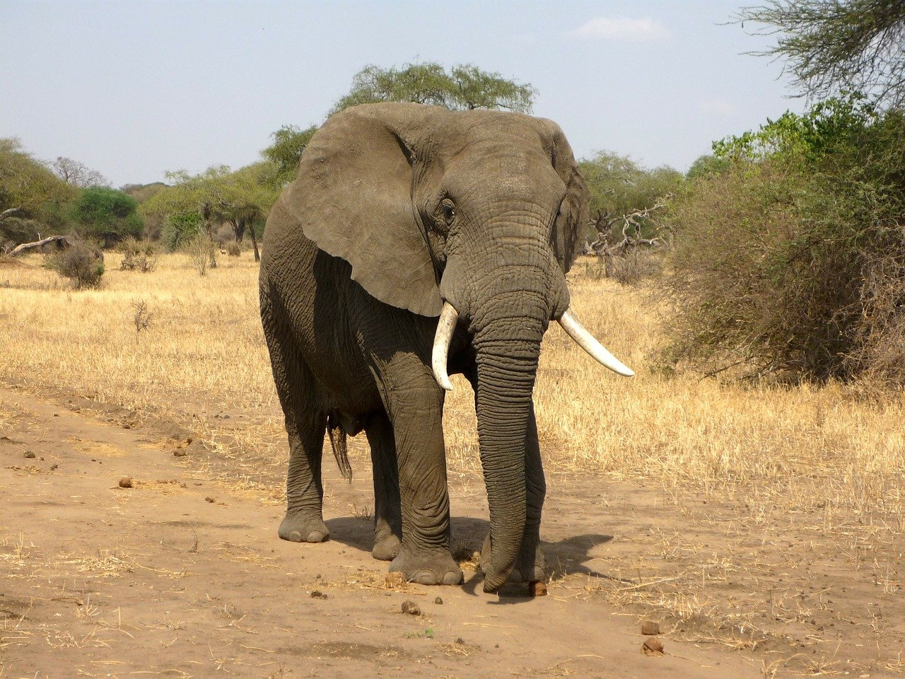
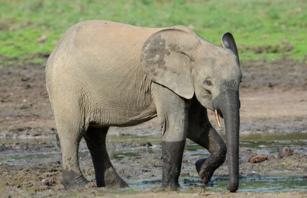
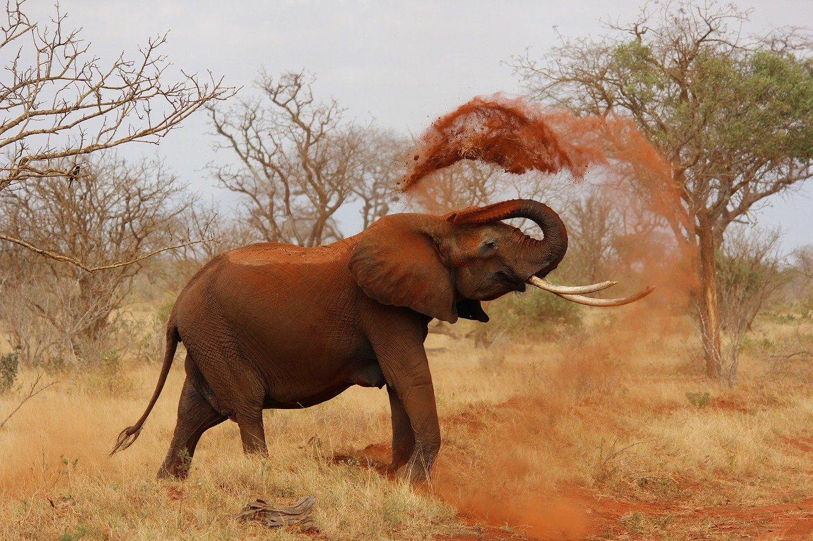
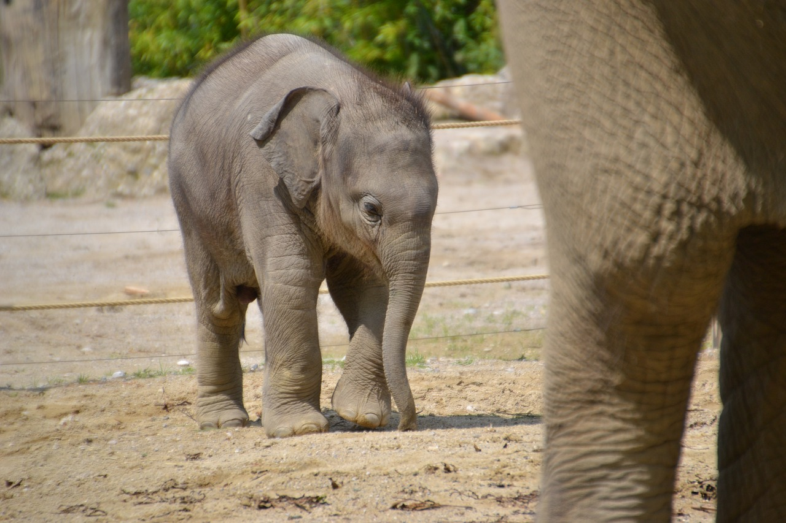
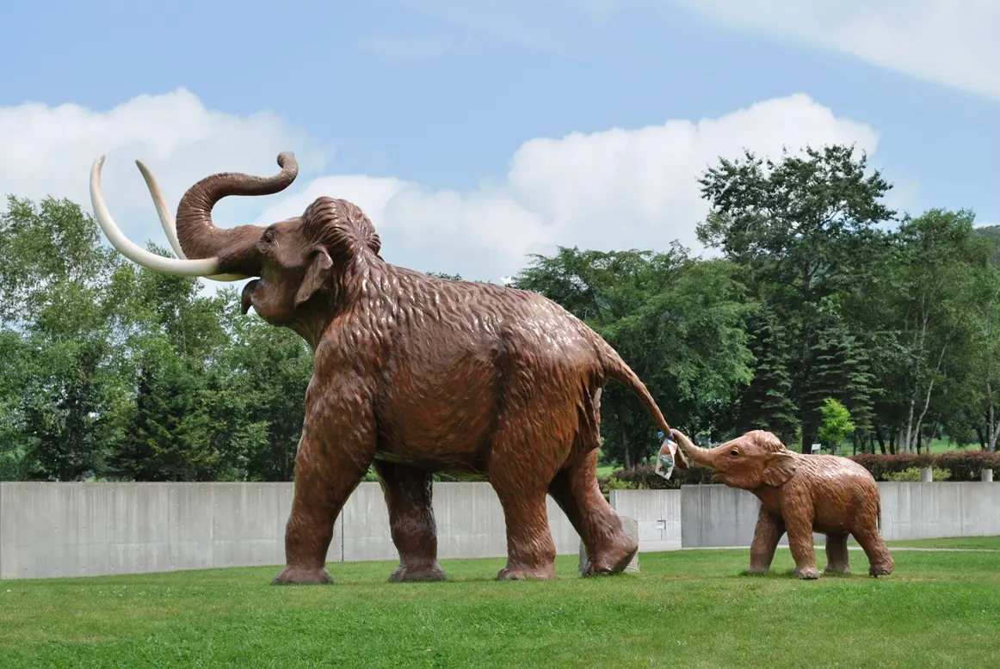
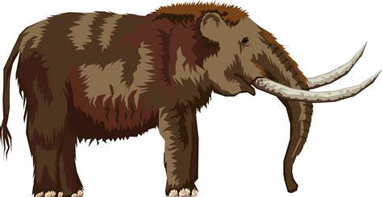

1.分類
学名︰Elephantidae Gray
ゾウ（象）は、哺乳綱ゾウ目（長鼻目）ゾウ科の総称である。
アジアゾウとアフリカゾウ、それとおそらくはマルミミゾウの、2属3種が現生し、これらは現生最大の陸生哺乳類である。他に絶滅したマンモスやナウマンゾウなどを含む。
※アフリカゾウ ※アジアゾウ
※アジアゾウ※マルミミゾウ
2.身体的特徴
長い鼻、大きな耳が特徴。首が短く、立ったままでは口を地面に付けることができない。膝をついてしゃがむか、筋肉質の長い鼻を使って食べ物や水などを口に運ぶ。鼻を使って水を体にかけ、水浴をすることもある。この鼻は上唇と鼻に相当する部分が発達したものであり、先端にある指のような突起で仁丹のような小さな物から、豆腐といったつかみにくい物までを器用につかむことができる。
第2切歯が巨大化した「牙」を持ち、オスのアフリカゾウでは牙の長さが3.5mにまで達することもある。牙は象牙として珍重され、密猟の対象となる。
アジアゾウとアフリカゾウの違いは様々だが、特に顕著なのは頭と耳である。アフリカゾウの頭には二つのこぶがあり、耳は大きく三角形である。アジアゾウの頭は平で、耳は小さく四角形である。
3.生態的特徴
雌と子供で群れを形成し、雄は単独か雄同士で別に群れを形成して生活する。巨大な体躯のため、成体のゾウが襲われることは少ないが、ヒトをはじめとして、敵は皆無という訳ではなく、アフリカではライオンの群れ、インドではトラが、主に若いゾウや幼獣を襲うことが確認されている。そのため、群れの成獣たちは常に幼獣の周囲を取り囲んで、これらの敵から身を守っている。
人間を見分けることもできるほどに高い認知能力を持っているといわれており、例えば飼育下では優しく接してくれた人間に対しては甘えたり挨拶したりするが、逆に自らや仲間に危害を加えた人物に対しては非常に攻撃的になる。また、人の言語の違いを聞き分けられるとも言われ、象を狩っていたマサイ族の言語を非常に警戒したとの報告もある。
4.食性／繁殖
食性
草・葉・果実・野菜などを食べる。ミネラルをとるために泥や岩塩などを食べることもある。草食動物で1日に150kgの植物や100Lの水を必要とし、野生個体の場合はほぼ一日中食事をとる。また糞の量も多い。成獣では1日平均100キロもの糞をだす。
繁殖
寿命は60歳から70歳で、20歳ほどで成獣になる。 哺乳動物の中で最も妊娠期間が長く、約22カ月に及ぶ。普通、2年から４年ごとに子どもを一頭産む。子ゾウの出生時の体重は約100キロ、身長は約90センチである。
5.生息分布
長鼻類で最も進化したグループであるゾウは新生代の第四紀にはオーストラリアと南極大陸以外の全ての大陸に分布していたが、自然環境の変化や人類の狩猟などによりやがて衰退し、現在はサハラ砂漠以南のアフリカに生息するアフリカゾウとインドおよび東南アジアに生息するアジアゾウのわずかに2種が残るのみであり、滅亡へ向かいつつあるグループといえる。動物園の定番ではあるが、共にIUCNレッドリストで絶滅危惧IB類に指定されている。またアフリカゾウの亜種と考えられてきたマルミミゾウは、最近は別種とされることが多くなっている。
6.起源／歴史
ゾウ類は人間の重要な狩り対象であった。食用としても重視され、先史時代からナウマンゾウやマンモスといったゾウ類が人類にとって重要な獲物であったことは多くの証拠から認められている。崖から数百頭の群れを一度に追い落とす猟が度々行われてきた痕跡から、彼らの絶滅に人間の関与を指摘する向きもある。
インドの神話でゾウは世界を支える存在として描かれる。古代地中海世界では戦象としてゾウを軍用に使役していた。ユーラシア大陸と陸続きだった頃の日本列島にはナウマンゾウが生息しており、旧石器時代には狩猟対象とされていた。
※ナウマンゾウ※マンモス